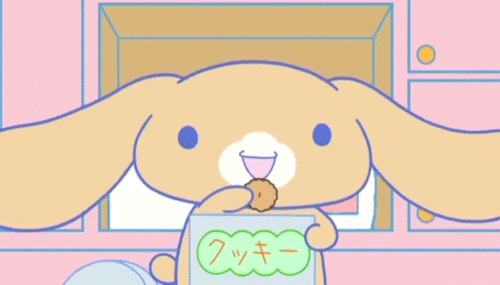
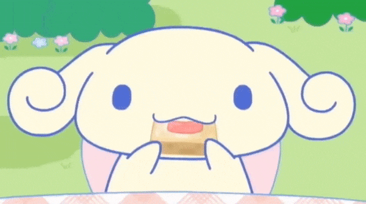

Mocha
Mocha es un personaje de Sanrio y miembro del universo Cinnamoroll. Ella es la líder del grupo ídolo Cinnamoangels y trabaja junto a Chiffon y Azuki. Mocha es una amiga amable y cariñosa y una hermana mayor de Cinnamoroll y sus otros amigos.

Baby Milk
Baby Milk es el personaje más pequeño de Sanrio y amigo de Cinnamoroll . Le encanta la leche, de ahí su nombre. Es un cachorro que quiere ser como Cinnamoroll algún día. Su chupete es su posesión más preciada y es experto en tragar grandes cantidades de leche.

Chiffon
Chiffon es parte del grupo ídolo Cinnamoangels junto a Mocha y Azuki. Chiffon crea un ambiente atlético y enérgico que no presta atención a los pequeños detalles. Le encantan los deportes y puede inventar juegos para sus amigos en el momento.

Cappuccino
Cappuccino es conocido como el más vago de los cachorros. Le gusta mucho tomar siestas, por lo que se le representa mayoritariamente con los ojos cerrados. Le encanta la comida.
Espresso
Espresso es el inteligente de los cachorros, es bien educado y tiene la voz de Rhode Montijo.
| Otros personajes de Sanrio, Personajes femeninos | Personajes masculinos |
|---|---|
Hello kitty
|
Keroppi |
My melody
|
Pompompurin |